컴퓨터활용능력-1급 (2005-07-24 기출문제)
1과목: 컴퓨터 일반
1. 다음은 인터넷 보안을 위한 해결책으로 사용되는 암호화 기법에 대한 설명이다. 다음 설명 중 옳지 않은 것은?
- 비밀키 암호화 기법은 동일한 키로 데이터를 암호화하고 복호화 한다.
- 비밀키 암호화 기법은 대칭키 기법 또는 단일키 암호화 기법이라고도 하며, 대표적으로 DES(Data Encryption Standard)가 있다.
- 공개키 암호화 기법은 비대칭 암호화 기법이라고도 하며, 대표적인 암호화 방식으로 RSA(Rivest, Shamir, Adleman)이 있다.
- 공개키 암호화 기법에서는 암호화할 때 사용하는 키는 비밀로 하고, 복호화할 때 사용하는 키는 공개하는 방식을 사용하여, 키의 분배가 용이하고 관리해야 하는 키의 개수가 작다는 장점을 가진다.
(정답률: 79%)

2. 다음 중 한글 Windows 98에서 새 하드웨어를 추가하려는 행위 중 거리가 먼 것은?
- 새 하드웨어 추가 마법사를 통하여 설치할 수 있다.
- [제어판]→[새 하드웨어 추가]를 선택하여 설치할 수 있다.
- Plug&Play를 지원하는 하드웨어인 경우 새로운 하드웨어가 감지되면 검색한 하드웨어의 설정 값을 지정하여 설치할 수 있다.
- [제어판]→[프로그램 추가/제거]를 선택하여 설치할 수 있다.
(정답률: 82%)
3. 프로그래밍 언어들에 대한 설명 중 올바르지 않은 설명은 어느 것인가?
- ASP는 Active Server Page라고 하며 서버측 스크립트 언어로 마이크로소프트사(MS사)에서 제공한 웹언어이다.
- PHP는 서버측 스크립트 언어로서 Linux, Unix, Window 운영체제에서 사용가능하다.
- JSP 스크립트 JSP 페이지에서 자바를 삽입할 수 있으며 JSP 페이지에 실질적인 영향을 주는 프로그래밍을 할 수 있다
- XML 문서들은 SGML 문서 형식을 따르고 있으며 SGML은 XML의 부분집합이라고도 할 수 있기 때문에 응용판 또는 축약된 형식의 XML이라고 볼 수 있다.
(정답률: 64%)
4. 다음 중 PC 업그레이드 설명으로 가장 거리가 먼 것은?
- Ultra-3 SCSI 방식의 하드디스크를 IDE 방식의 하드디스크로 교체하여 속도를 빠르게 할 수 있다.
- 윈도우 가속기인 액셀러레이터가 포함된 그래픽 카드로 교환하면 모니터 화면의 표시 속도가 빨라진다.
- 메모리 업그레이드란 RAM의 용량을 늘리는 것이다.
- 시스템 클록 속도의 모니터 주파수 값의 단위로 사용하는 헤르쯔(Hz) 단위는 값이 높을수록 시스템의 처리 속도가 빠르며 PC 속도와 성능을 나타낼 때 사용하는 단위이다.
(정답률: 66%)
5. 다음 중 멀티미디어 정지 이미지 압축에 사용하는 기법은?
- VGA
- AVI
- MPEG
- JPEG
(정답률: 83%)
6. 한글 Windows 98의 보조 프로그램 중 메모장에 대한 설명으로 가장 옳지 않은 것은?
- 문서의 크기가 64KB 보다 큰 ASCII 코드 형식의 텍스트 파일을 작성, 편집, 인쇄할 수 있다.
- 메모장의 실행 파일은 Notepad.exe 파일이다.
- 자동 줄 바꿈, 찾기, 시간/날짜 삽입하는 기능을 제공한다.
- 작성한 문서를 저장할 때 기본저장파일 확장자는 .txt이다.
(정답률: 74%)
7. 데이터통신에서 사용하는 용어에 대한 설명 중 올바르지 않은 것은?
- 패킷교환 : 데이터를 패킷(packet)이라고 부르는 작은 단위로 전송하는 방식
- 지점간 방식 : 중앙의 컴퓨터와 단말노드가 일대일로 연결되는 방식으로 전송되는 데이터의 양이 많을 때 유리한 방식
- 멀티포인트 방식 : 다수의 단말노드가 하나의 통신회선에 연결되어 정보의 송수신을 행하는 방식
- ISDN 방식 : 전자파의 연속적인 값으로 이루어져 있는 아날로그 데이터 전송방식
(정답률: 71%)
8. 다음 시스템 도구 중 하드 디스크상의 파일과 폴더의 오류를 검사하고 디스크 표면의 오류를 검사할 수 있는 것은?
- 디스크 공간 늘림
- 백업
- 디스크 검사
- 자원측정기
(정답률: 91%)
9. 한글 Windows 98의 제어판에 있는 시스템 등록 정보 창을 열기 위한 방법으로 옳지 않은 것은?
- [시작]-[설정]-[제어판]에서 시스템 아이콘을 더블 클릭한다.
- 윈도우 탐색기의 폴더 목록에서 제어판을 클릭한 다음 오른쪽 목록에서 시스템을 더블 클릭한다.
- 바탕화면의 내컴퓨터를 마우스 오른쪽 버튼으로 클릭한 다음 등록정보를 선택한다.
- [시작]-[프로그램]-[보조프로그램]-[시스템도구]에서 시스템을 더블 클릭한다.
(정답률: 61%)
10. 다음 중 인터넷상에서 전 세계적으로 퍼져있는 anonymous FTP 서버내의 파일 리스트를 검색하기 위해 사용되는 데이터베이스 검색 서비스는?
- telnet
- Archie
- Gopher
- usenet
(정답률: 63%)
11. 한글 Windows 98의 부팅 메뉴에 관한 설명 중 거리가 먼 것은?
- Safe mode : 시스템에 문제가 있어 정상적으로 부팅이 안될 경우 윈도우 98이 동작할 수 있는 최소한의 내용만 가지고 부팅한다.
- Step-by-Step confirmation : 윈도우98 부팅시 읽어 들이는 드라이버 프로그램이나 파일들을 하나 하나 확인하면서 진행한다.
- Command Prompt Only : 윈도우98 상태로 부팅하지 않고 도스 상태로 부팅을 하며 이 상태에서는 윈도우 98로 전환할 수 없다.
- Logged : 윈도우98이 부팅될 때 부팅 과정을 Bootlog.txt 파일에 저장하여 부팅에 문제가 발생했을 경우 이 부팅 기록을 보면 원인을 알 수 있다.
(정답률: 72%)
12. 십진수 1,024를 이진수로 올바르게 표현한 것은?
- 10000000000
- 1111111111
- 11111111111
- 1000000000
(정답률: 72%)
13. 아래에서 설명하는 용어로 적절한 것은?
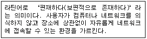
- DMB
- 블루투스(Bluetooth)
- 유비쿼터스(Ubiquitous)
- Home RF
(정답률: 87%)
14. 다음 중 멀티미디어에 대한 설명으로 틀린 것은?
- 멀티(Multi)와 미디어(Media)가 합성된 말이다.
- 멀티미디어 통신도 가능하다.
- 멀티미디어 검색형 서비스로 VOD등이 있다.
- 문자나 도형위주의 정보처리에 국한된다.
(정답률: 86%)
15. 컴퓨터가 현재 실행하고 있는 명령을 끝낸 후 다음에 실행할 명령의 주소를 기억하고 있는 레지스터는?
- 명령레지스터(instruction register)
- 명령계수기(program counter)
- 부호기(encoder)
- 명령해독기(instruction decoder)
(정답률: 67%)
16. 한글 Windows 98에서 CD-ROM이나 사운드 카드가 인식되지 않아 이를 해결하고자 한다. 다음 중 가장 적절한 제어판의 항목은 무엇인가?
- 내게 필요한 옵션→소리
- 사용자
- 프로그램 추가/제거
- 시스템
(정답률: 72%)
17. 한글 Windows 98에서 [시작]→[시스템 종료]→[시스템 대기]를 클릭하고 잠시 후 원래 상태로 돌아가려고 할 때 암호를 물어 보았다. 다음부터는 대기상태 해제 후 암호를 물어 보지 않게 직접 설정할 수 있는 제어판의 항목은?(문제오류로 실제 시험장에서는 1,4번을 정답처리 하였습니다. 여기서는 1번을 정답 처리 합니다.)
- 디스플레이
- 암호
- 바탕화면 테마
- 전원관리
(정답률: 84%)
18. 다음에서 설명하고 있는 웹언어는 무엇인가?
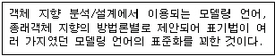
- UML
- XML
- WML
- ASP
(정답률: 52%)
19. 인터넷상에 있는 모든 시스템은 인터넷 주소라고 불리는 고유의 IP 주소를 할당받는다. IP 주소는 4개의 필드로 구성되어 있으며, 이 4개의 필드는 마침표로 구분된 숫자로 표시된다. 이렇게 숫자로 부여된 IP 주소를 사용자가 알아보기 쉽도록 단어식으로 표현한 것을 무엇이라고 하는가?
- Gateway
- Usenet
- Domain Name
- Mailing Lists
(정답률: 87%)
20. IPV4의 IP 주소에 대한 설명으로 잘못된 것은?
- B 클래스는 A 클래스보다 규모가 적다.
- 현재 IP 주소는 32비트로 구성되어 있다.
- C 클래스의 기본 서브넷 마스크는 255.255.0.0 이다.
- C 클래스는 한 네트워크에서 254대의 컴퓨터에서 IP주소를 할당할 수 있다.
(정답률: 60%)
2과목: 스프레드시트 일반
21. 다음의 수학함수의 설명으로 틀린 것은?
- MMULT : 두 배열의 행렬 합을 구합니다.
- ABS : 절대값을 구합니다.
- SUMIF : 주어진 조건에 의해 지정된 셀들의 합을 구합니다.
- PRODUCT : 인수들의 곱을 구합니다.
(정답률: 75%)
22. 다음 그림과 같은 메시지 박스를 나타내기 위한 코드로 옳은 것은?
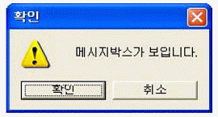
- ret=msgbox("확인“,48,”메시지박스가 보입니다.“)
- ret=msgbox("확인“,49,”메시지박스가 보입니다.“)
- ret=msgbox("메시지박스가 보입니다.“,48,”확인“)
- ret=msgbox("메시지박스가 보입니다.“,49,”확인“)
(정답률: 58%)
23. 다음 중 통합 문서 공유 과정에 관한 설명이다. 틀린 것은?
- 통합문서를 공유하려면 [도구]→[통합 문서 공유]메뉴를 선택하고 [편집]에서 [여러 사용자가 동시에 변경할 수 있으며 통합 문서 병합도 가능] 확인란을 선택한다.
- 공유 통합 문서를 네트워크 위치에 복사해도 다른 통합문서나 문서의 연결은 그대로 유지된다.
- 통합 문서가 공유되면 여러 사용자가 값, 서식 및 통합 문서의 다른 요소를 동시에 변경할 수 없다.
- 변경 내용을 저장하면 공유 통합 문서의 복사본이 만들어져 변경한 내용들을 병합할 수도 있다.
(정답률: 72%)
24. 점수(point)가 90점 이상이면 Excellent, 아니면 Good이라 평가하는 사용자 정의 함수 fevaluation을 만들고자 한다. 다음의 Module(코드)의 구문에서 문법과 의미로 보았을 때 옳은 부분은?
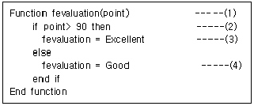
- (1)
- (2)
- (3)
- (4)
(정답률: 70%)
25. 아래의 [B7]셀에 입력된 수식 “=VLOOKUP(180000,B3:C6,2,TRUE)"의 결과 값으로 올바른 것은?
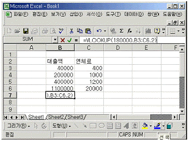
- 20000
- 1000
- 1200
- 400
(정답률: 66%)
26. 아래 화면은 “보기”에서 “페이지 나누기 보기”를 누른 후 “페이지 나누기 삽입”을 이용하여 하나의 페이지를 6 페이지로 나눈 것이다. 페이지 분할선을 해제하려면 “페이지 나누기 보기”화면에서 마우스 오른쪽 버튼을 눌러 나타나는 메뉴 중 어느 것을 선택하면 되는가?
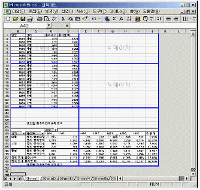
- 페이지 설정
- 인쇄영역 설정
- 모든 페이지 나누기 다시 설정
- 인쇄 영역 다시 설정
(정답률: 76%)
27. 양식도구모음과 컨트롤도구 상자의 차이점으로 옳지 않은 것은?(문제 오류로 실제 시험장에서는 1, 4번이 정답 처리되었습니다. 여기서는 1번을 정답 처리 합니다.)
- 양식도구모음과 컨트롤도구상자는 모두 워크시트에 컨트롤을 작성하기 위해 사용한다.
- 양식도구모음에 속하는 각 컨트롤들은 작성 후 매크로를 지정하여 사용하는 것이 보통이다.
- 컨트롤도구상자에 속하는 각 컨트롤들은 작성 후 이벤트 프로시저를 통해 특정한 작업을 수행하는 방식으로 사용한다.
- 양식도구모음에는 디자인모두가 있지만, 컨트롤도구상자에는 디자인 모드가 없다.
(정답률: 82%)
28. 다음 차트에 대한 설명으로 틀린 것은?
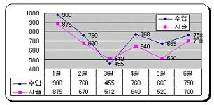
- 데이터 레이블의 “값 표시”가 적용되어 있다.
- 데이터 테이블과 범례 표식이 표시되어 있다.
- 차트 영역에 “그림자”와 “모서리 둥글게”가 적용되어 있다.
- X(항목)축 교점은 0 이다.
(정답률: 83%)
29. 다음 중 지도차트에 대한 설명으로 잘못된 것은?
- 지도차트에 사용되는 국가명 또는 도시명은 엑셀에서 정의하는 이름을 사용해야 한다.
- 구분차트는 데이터를 음영 또는 색상으로 표시한다.
- 밀도차트는 데이터를 점으로 표시한다.
- 등급차트는 데이터를 기호의 개수로 표시한다.
(정답률: 61%)
30. 다음 중 매크로 코드에 대한 설명 중 잘못된 것은?
- range("A1:A10, C1:C5") : A1셀부터 A10셀까지, C1셀부터 C5셀까지(두개의 셀 범위)
- cells(5,4) : 5행 4열 즉 D5셀을 의미한다.
- ActiveCell.Offeset(2,3) : 현재 셀로부터 위쪽으로 2행 왼쪽으로 3열 떨어진 위치의 셀을 의미한다.
- Activecell.Comment.Visible = True : 현재 셀의 메모가 항상 표시되는 설정을 의미한다.
(정답률: 68%)
31. 아래의 데이터에 표시 형식 #,###, 를 적용했을 때 표시되는 값으로 올바른 것은?
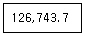
- 126
- 127
- 126,743
- 126,744
(정답률: 55%)
32. 데이터 테이블 구조를 가진 데이터 목록 전체를 한꺼번에 선택하는 방법은?
- 데이터목록에 포함된 셀 하나를 선택한 상태에서 <Ctrl>+<Shift>+<8>키를 동시에 누른다.
- 데이터목록에 포함된 셀 하나를 선택한 상태에서 <Ctrl>+<Shift>+<F8>키를 동시에 누른다.
- 데이터목록에 포함된 셀 하나를 선택한 상태에서 <Ctrl>+<Alt>+<8>키를 동시에 누른다.
- 데이터목록에 포함된 셀 하나를 선택한 상태에서 <Ctrl>+<Alt>+<F8>키를 통시에 누른다.
(정답률: 52%)
33. 다음은 피벗 마법사의 3단계 대화 상자 중 “옵션” 대화 상자에서 설정할 수 있는 기능이 아닌 것은?
- 피벗 테이블의 이름을 설정한다.
- 데이터 영역에 위치한 각 필드의 열 방향 총 합계의 표시 여부를 설정한다.
- 데이터 영역의 빈 셀에 표시할 값을 설정한다.
- 피벗 테이블에서 각 필드의 배치 위치를 설정한다.
(정답률: 48%)
34. 매달 일정 금액을 저축하여 15년 동안 1,500,000,000을 모으려 한다. 저축금액에 연리 6%의 이자가 붙는다고 가정할 때 PMT를 사용하여 매월 저축해야 할 금액을 구하는 올바른 함수식은? (단, 현재가치는 0임)(문제 오류로 실제 시험장에서는 모두 정답 처리한 문제 입니다. 여기서는 1번을 정답 처리 합니다.
- =PMT(6%/12, 15*12, 0, 150000000)
- =PMT(6%/12, 15, 150000000)
- =PMT(6%/12, 15*12, 150000000)
- =PMT(6%.12, 15, 0, 150000000)
(정답률: 79%)
35. 다음은 도구 모음에 추가되어 있는 카메라 단추를 활용하기 위한 작업 순서를 나타낸 것이다. 올바른 순서로 연결된 것은?
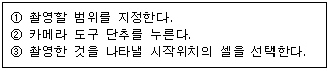
- ①-②-③
- ②-①-③
- ③-②-①
- ③-①-②
(정답률: 75%)
36. 다음 중 도구모음 [그림]과 [그리기 도구 모음]의 양쪽 모두에 있는 도구상자는?
- 파일로 부터 그림 삽입(
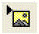
) - 개체 선택(
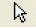
) - 선 스타일(
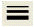
) - 화살표(
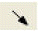
)
(정답률: 58%)
37. 다음은 셀 서식의 표시 형식에 대한 설명이다. 잘못된 것은?
- 0의 값은 회계 표시 형식을 이용하면 -로 표시할 수 있다.
- dddd 표시 형식은 요일을 Saturday와 같은 형태로 표시한다.
- 통화 서식에서는 음수의 표시 형식을 설정할 수 없다.
- yyyy.mmm 표시 형식은 2003. Jul의 같은 형태로 표시한다.
(정답률: 74%)
38. 다음 그림에서 판매자별 데이터들의 합계를 보여주고 있다. 이러한 기능에 사용되는 데이터 관리 방법은?
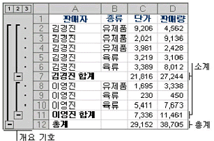
- 부분합
- 목표값 찾기
- 시나리오 분석
- 피벗 테이블
(정답률: 80%)
39. 다음 프로그램의 실행 결과에 대한 설명으로 올바른 것은?
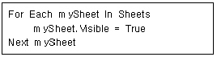
- 현재 통합 문서의 모든 시트를 화면에서 숨긴다.
- 현재 통합 문서의 현재 워크 시트만을 화면에서 숨긴다.
- 현재 통합 문서의 현재 워크 시트만을 화면에 표시한다.
- 현재 통합 문서의 모든 시트를 화면에 표시한다.
(정답률: 50%)
40. 다음 중 데이터 유효성에 대한 설명으로 틀린 것은?
- [데이터유효성] 대화상자의 [설정] 탭에서 유효성조건 중 제한 대상에서 사용자정의를 선택하였을 때 제한방법과 수식을 정의할 수 있다.
- 셀을 선택하면 보여줄 입력메시지는 [데이터유효성] 대화상자의 [설명메시지] 탭에서 지정한다.
- 셀에 잘못된 데이터를 입력하면 나타낼 오류메시지는 [데이터유효성] 대화상자의 [오류메시지] 탭에서 지정한다.
- 유효성 검사가 설정되어 있지 않은 셀을 유효성 검사가 설정되어 있는 셀에 붙여넣기하면 유효성 검사 설정내용은 없어진다.
(정답률: 28%)
3과목: 데이터베이스 일반
41. 다음과 같이 설정되어 있는 [관계 편집] 대화상자에 대한 설명으로 맞지 않는 것은?
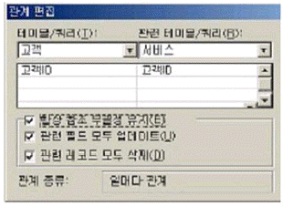
- 고객과 서비스 테이블 간에 일대다 관계를 설정하고 있다.
- 고객.고객ID는 기본키(PK) 혹은 유일한 필드이고 서비스.고객ID는 외부키(FK)이다.
- 고객.고객ID에 존재하지 않는 값을 서비스.고객ID의 필드 값으로 입력할 수 없다.
- 서비스 테이블 레코드를 삭제하면 삭제된 레코드의 고객 ID와 같은 값을 갖는 고객 테이블의 레코드가 삭제된다.
(정답률: 58%)
42. 보고서의 레코드 원본 속성에 지정될 수 없는 것은?
- 폼
- 테이블
- 쿼리명
- SELECT 구문
(정답률: 64%)
43. 어떤 릴레이션 R에 존재하는 모든 속성들은 원자 값만을 가지며, 기본 키에 속하지 않는 각 속성은 기본 키에 완전하게 함수적으로 종속된다. 이 릴레이션 R은 어떤 정규형의 릴레이션인가?
- 제4정규형
- 제3정규형
- 보이스-코드 정규형
- 제2정규형
(정답률: 62%)
44. RecordSet 개체 속성 중 현재 레코드 위치가 RecordSet 개체의 첫 번째 레코드 앞에 온다는 것을 나타내는 값을 반환하는 속성은 무엇인가?
- EOF
- BOF
- RccordCount
- Filter
(정답률: 63%)
45. 성적 테이블에서 성적이 60점을 초과하고 99점 보다 적은 학생의 학번과 성적을 검색하고자 한다 작성방법이 옳은 것은?
- SELECT * FROM 성적 WHERE 성적 > 60 OR 성적 < 99;
- SELECT 학번, 성적 FROM 성적 WHERE 성적 > 60 OR 성적 < 99;
- SELECT 학번, 성적 FROM 성적 WHERE 성적 > 60;
- SELECT 학번, 성적 FROM 성적 WHERE 성적 > 60 And 성적 < 99;
(정답률: 80%)
46. 데이터 내보내기(export)에 대한 설명으로 옳지 않은 것은?
- 특정한 테이블을 선택한 후 [파일]-[내보내기] 명령을 이용하면 테이블을 다른 곳으로 내보낼 수 있다.
- [내보내기] 대화 상자에서 파일 형식을 서식이 있는 텍스트 형식(*.rtf)으로 선택할 수 있다.
- 파일을 내보내는 경우 ODBC DataBases 파일은 만들 수 없다.
- 엑셀 워크시트 형식으로 내보내면 선택한 테이블이 새로운 엑셀 통합문서 파일로 작성된다.
(정답률: 75%)
47. 아래의 기본 테이블을 이용한 질의의 결과 레코드가 3개인 것은 무엇인가?
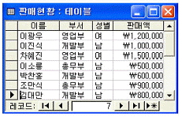
- Select 부서, SUM(판매액) AS 판매합계 From 판매현황 Group By 부서;
- Select 성별, AVG(판매액) AS 판매평균 From 판매현황 Group By 성별;
- Select 부서, COUNT(부서) AS 사원수 From 판매현황 Group By 부서 Having COUNT(부서)> 2;
- Select 부서, COUNT(판매액) AS 사원수 From 판매현황 Where 판매액 >=1000000 Group By 부서;
(정답률: 58%)
48. 다음 중 VBA에서 사용하는 데이터 형식과 저장 크기가 잘못된 것은?
- Boolean : 2Byte
- Long(배정수형) : 8Byte
- Date(날짜 & 시간) : 8Byte
- Currency : 8Byte
(정답률: 61%)
49. 하위 폼에 대한 설명으로 옳지 않은 것은?
- 하위 폼이란 특정한 폼 안에 들어있는 또 하나의 폼을 말한다.
- 하위 폼을 사용하면 일 대 다 관계가 설정되어 있는 테이블이나 쿼리에서 데이터를 효과적으로 표시할 수 있다.
- 하위 폼은 단일폼으로 표시되며 연속폼으로는 표시할 수 없다.
- 데이터베이스 창에서 테이블, 쿼리, 폼 등을 폼 창으로 드래그 앤 드롭 하여 하위 폼으로 삽입할 수 있다.
(정답률: 81%)
50. 다음 중 주소 레이블 보고서를 작성하는데 관계 없는 것은?
- 레이블 크기 지정
- 문자열 모양 지정
- 범례 지정
- 사용할 필드 지정
(정답률: 64%)
51. 다음은 폼의 주요 속성에 대한 설명이다. 바르지 않은 것은?
- 폼 전체나 각 구역별로 폼을 구성하는 각 컨트롤에 속성을 지정할 수 있다.
- 생성된 폼 파일을 마우스 오른쪽 클릭 후 디자인보기를 선택하면 생성된 폼을 수정할 수 있다.
- 레코드를 정렬하는 방법을 지정하는 속성은 Order By 이다.
- 응용 프로그램 창에서 폼을 열 때 자동으로 가운데 맞출 것인지의 여부의 지정에 관한 속성은 AutoResize 이다.
(정답률: 65%)
52. 데이터시트 형식으로 작성된 폼을 실행시켰을 때 한 화면에 하나의 레코드만 표시되게 하려고 한다. 폼의 어떤 속성을 선택해야 하나?
- 기본 보기
- 컨트롤 상자
- 레코드 선택기
- 탐색 단추
(정답률: 62%)
53. 보기의 SQL 문을 실행하면 레코드 수와 필드 수는 얼마가 되겠는가? 단, 테이블 A의 필드와 레코드 수는 각각 2, 5개이고 테이블 B의 필드와 레코드 수는 3, 5개이다.
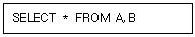
- 필드 수 : 5개
레코드 수 : 10개 - 필드 수 : 5개
레코드 수 : 25개 - 필드 수 : 6개
레코드 수 : 10개 - 필드 수 : 6개
레코드 수 : 25개
(정답률: 68%)
54. 다음 중 탭 순서(Tab Order) 설정에 대한 설명으로 가장 적절한 것은?
- 디자인보기의 탭 순서는 컨트롤을 만드는 순서와 항상 일치하지 않는다.
- 폼에서 선택할 수 있는 컨트롤을 탭 순서에서 제외시키려면 ‘탭 정지’ 속성을 “예”로 설정한다.
- 현재 레코드의 마지막 필드에서 탭 키를 눌렀을 때 포커스가 이동할 레코드나 페이지를 지정할 수 없다.
- ‘탭 정지’ 속성은 폼 컨트롤에만 적용되며, 보고서 컨트롤에는 적용되지 않는다.
(정답률: 52%)
55. 테이블 디자인에서 그림에서와 같이 조회 표시에서 콤보상자를 선택하면 여러 가지 속성이 표시된다. 속성에 대한 설명 중 잘못 된 것은?
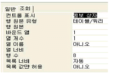
- 행 원본 : 컨트롤 데이터의 원본을 지정한다.
- 바운드 열 : 목록상자의 설정된 값을 포함하는 컨트롤의 열을 지정한다.
- 행 개수 : 콤보상자의 목록에 표시되는 최대 행의 수를 지정한다.
- 목록너비 : 콤보상자 드롭다운 목록의 너비를 지정한다.
(정답률: 64%)
56. 보고서에서 입력란 컨트롤의 [컨트롤 원본] 속성에 입력하는 식에 관한 설명으로 옳지 않은 것은?
- 식은 -로 시작한다.
- “ ” 안의 문자는 그대로 표시된다.
- &는 두 항목을 연결해주는 기호이다.
- 식에 필드의 이름을 사용할 때는 { }로 둘러싼다.
(정답률: 57%)
57. 보고서의 그룹화에 대한 설명이다. 다음 중 잘못된 것은?
- 보고서를 나타낼 때 특정 필드를 그룹으로 묶어서 표시한다.
- 그룹화는 [디자인 보기] 상태에서 [보기]-[정렬 및 그룹화]를 선택한다.
- 그룹은 레코드 집합이 둘 이상의 필드, 식, 그룹 레코드 원본에 의해 그룹화될 때 중첩된다.
- 정렬하거나 그룹화한 첫 번째 필드, 식, 그룹 레코드 원본의 수준은 0이며, 보고서에서는 5개까지의 그룹 수준을 만들 수 있다.
(정답률: 73%)
58. 그림과 같은 내용으로 관계를 형성하고 있다 이에 바른 설명은?
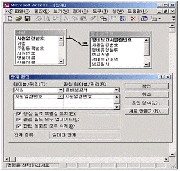
- 두 테이블의 조인된 필드가 일치하는 행만 포함
- “사원” 테이블에서는 모든 레코드를 포함하고 “경비보고서” 테이블에서는 조인된 필드가 일치하는 행만 포함
- “경비보고서” 테이블에서는 모든 레코드를 포함하고 ”사원“ 테이블에서는 조인된 필드가 일치하는 행만 포함
- “경비보고서” 테이블에서는 모든 레코드를 포함.
(정답률: 50%)
59. 다음 SQL문으로 알 수 있는 사항이 아닌 것은?
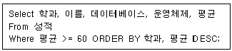
- 성적 테이블에서 검색을 수행한다.
- 평균 60점 이상만 검색대상이 된다.
- 검색 결과를 학과와 평균의 내림차순으로 정렬한다.
- 학과, 이름, 데이터베이스, 운영체제, 평균 열을 검색한다.
(정답률: 65%)
60. 테이블에서 데이터의 입력과 수정 작업 시에 레코드 편집 작업에 관련된 설명이다. 바르지 못한 설명은?
- 레코드는 한번 삭제되면 되살릴 수 없다.
- 레코드와 레코드 경계선을 마우스로 드래그하여 레코드 높이를 변경할 수 있다.
- 특정한 하나의 레코드 높이만 변경할 수 있다.
- 여러 개의 레코드를 동시에 삭제할 수 있다.
(정답률: 59%)